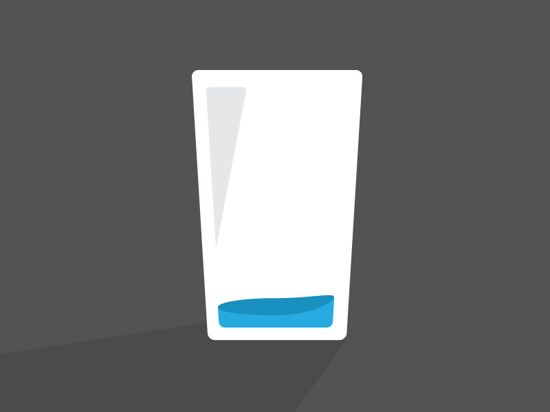

Why you Don’t Need a whole Weekend to do that Assignment
Feb 5 '22 • Written by Yassen Shopov
📖 9 minute read
You’ve been there, I’ve been there (to be fair, I’m currently there) - the week of the deadline assignment.
It creeps up on you steadily during the semester, and since we do tend to have more than one assignment (usually) per semester, it’s very easy to lose track of time. What happens most often in my case is the following scenario: it’s Friday, the deadline is either Sunday at midnight or Monday at noon, and I realise that no matter how much progress I’ve made with said assignment, my weekend will most probably be spent working on it either way.
Many people would think it’s normal, but what happens if the assignment happens to be smaller and faster to do? Generally, in my experience, it takes just as much time, it’s just that most of my weekend gets wasted procrastinating the assignment instead of actually doing it.
It seems like no matter how big or small my project is, it takes up just as much time. And if I happen to have more than 1 assignment per week, which definitely has happened, I find it very hard to split my time 50/50 for the hypothetical two assignments.
Luckily, I am not alone in this struggle, and neither are you. There is a well-known phenomenon that explains and encapsulates this problem well - and it also provides a way out. In this article, I will go into the mechanics of Parkinson’s Law and how understanding it can help us not spend the whole weekend doing this assignment.
Parkinson’s Law
Parkinson’s law - “the amount of work expands to fill the time available for its completion“ [1].
It is a simple framework that explains that if you decide that your assignment is going to take the whole weekend to do, it is gonna take you the whole weekend. Once you allocate a given amount of hours to a task, you just spend them differently in proportion. So if the task takes you, say, exactly 2 hours of deep concentrated work, if you end up allocating a whole day to it you would just end up spending the majority of the day procrastinating the task, doing preparation work, getting mindlessly distracted here and there.
So it would feel like it took the whole day, or the whole weekend, but in total, you probably spent a very small fraction o the time actually working on said assignment.
While it’s not a bad thing to allocate some buffer time for your task as well, it doesn’t need to be a whole day. Stuff generally doesn’t require a full weekend or even a whole day of concentrated work on your end to get done. This is mainly because, in 24 hours, you have many little tasks that you often don’t take into account when time-blocking, so they skew your results a little. These small but necessary “distractions” include, but are not limited to:
Sleeping
Eating
Brushing your teeth
Exercising
Prepping food, shopping, cleaning, moving around
Even the simple task of sitting down behind your laptop to write your assignment takes some somewhat necessary distractions - pouring yourself a coffee, opening up the Word document, reading through some background material.
So all in all, the longer you say that a task s gonna take you, the more blank time you five yourself to distract yourself with stuff other than the work. We live in such a busy world that you very rarely find yourself not busy doing something, even if it is just browsing your phone. You can find a hundred ways to waste or spend your time if you have some, and we very rarely decide to “waste” some time in productive manners.
And the logic follows that the less time you allocate to a task, the bigger proportion of this time block you will spend actually working. This is also the reason why self-imposed deadlines are a great idea - if you imagine you would write a book “someday when you have the time”, you will never get the time to do it. However, if you go with some arbitrary pace of like 500 words a day, you would eventually get a lot of words jotted down and ready much earlier than you would expect.
How do I know how long the task should take?
It’s a skill that nobody is born with, and some people are especially bad at correct time perception and time management (sometimes due to a mental health issue).
However, there are some things you could consider to make sure you get a good estimate of how long a task is going to take you.
If you have done a task before, measure how much time it took you. Then make an honest review of how much time you spent actually doing the task and use this as your new estimate. The more repetitions you do, the better you will get at guessing how much time it will take you.
Try getting more things on your to-do list that you know you will get done. Even if you stay home the whole day, you still do all those little random tasks. Track those, so you get a better feel of how you actually spend your day - you may end up feeling more productive than you know.
Some tasks are better achieved with friends. If you do a task in a social environment with other people also doing the same or similar tasks, you will get a better feel of how much time you actually spend working and how many distractions you’re allowing yourself.
Allow for some buffer time after all. Contrary to the “hustle” mindset methodology, I believe that we need to feel more motivated about accomplishing everyday tasks. By allowing ourselves a 3-hour block of time for a 2-hour task allows us to feel accomplished if we get it done in 2 hours and not disappointed if we manage to do it in 3.
If you still spend more time than you think is needed on an assignment, or any task, really, maybe you should consider discarding some distractions from your work environment and making small adjustments in your style of work. There are some techniques like the Pomodoro technique that make you work for 25 minutes and rest for 5 minutes.
Overall, if there is one key message from this whole article that I want you to keep is that tasks generally don’t take as long as you assume - just make sure to be realistic about it and give yourself the best working conditions you’re currently capable of.
References
[1] Lifehack. 2022. How to Use Parkinson’s Law to Get More Done in Less Time. [online] Available at: https://www.lifehack.org/articles/featured/how-to-use-parkinsons-law-to-your-advantage.html [Accessed 8 February 2022].
[6:34]
by Better Than Yesterday